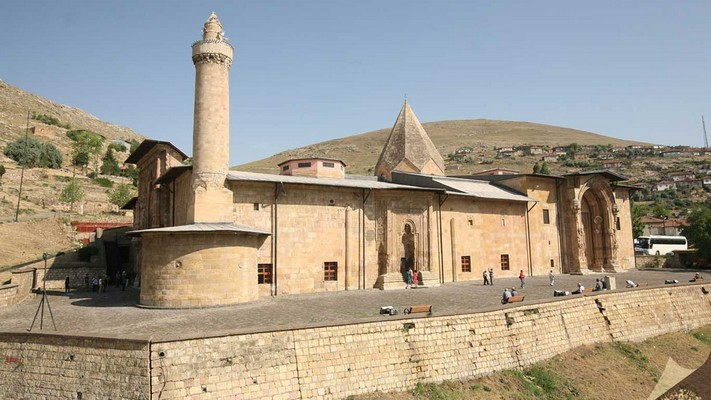
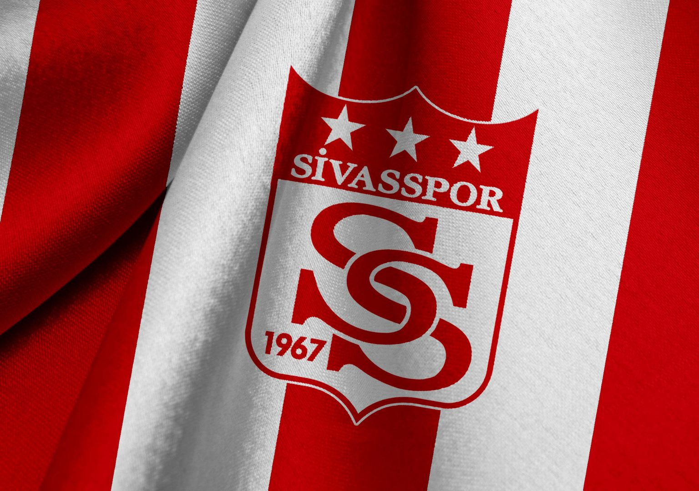
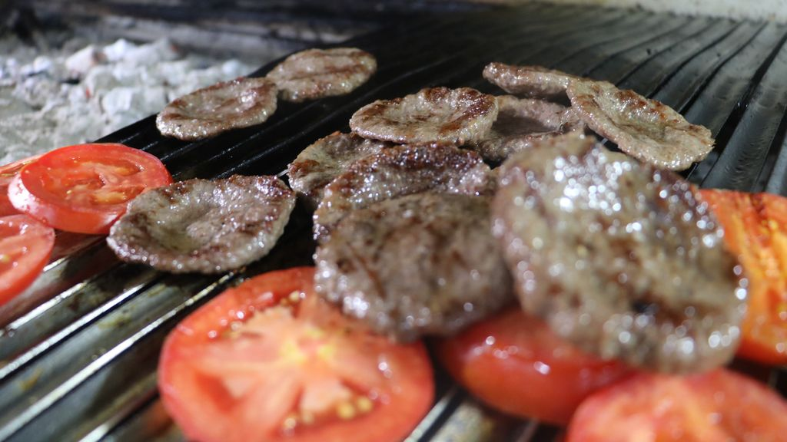
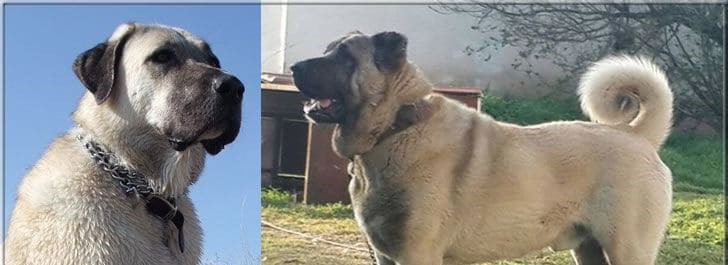

Mirasımız
Sivas’ın en önemli kültürel miraslarından biri olan Divriği Ulu Cami ve Darüşşifası, UNESCO Dünya Mirası Listesi'nde yer alır.
1228 yılında Mengücekli Beyliği döneminde inşa edilmiştir. Taş işçiliğindeki detaylar ve eşsiz mimarisiyle dünyaca ünlüdür.
Sivasspor – Şehrimizin Futbol Takımı
Sivasspor, 1967 yılında kurulmuş ve Süpür Lig'de önemli başarılar elde etmiş bir futbol takımıdır.
2021-2022 sezonunda Türkiye Kupası'nı kazanarak büyük bir başarıya imza atmıştır.
Sivas Köftesi
Sivas köftesi, özel baharatlar ve dana eti ile hazırlanan, şehrin kendine has lezzetlerinden biridir. Özellikle mangalda pişirildiğinde tadını doruğa ulaşır.
Sivas'a gelen herkesin bu lezzeti mutlaka tatması önerilir.
Sivas Kangalı
Kangal köpeği, Sivas'a özgü bir ırk olup dünya çapında tanınmıştır. Sadıkatı, güçlü yapısı ve bekçi olma özelliği ile bilinir.
Sivas Kangalı, şehrimizin en önemli sembollerinden biridir.
Sivas Hingeli
Hingel, mantıya benzeyen ancak daha büyük parçalar halinde yapılan geleneksel bir Sivas yemeğidir. Yoğurt ve tereyağlı sosla servis edilir.
Sivas'a gelen misafirlerin mutlaka tatması gereken bir diğer lezzettir.